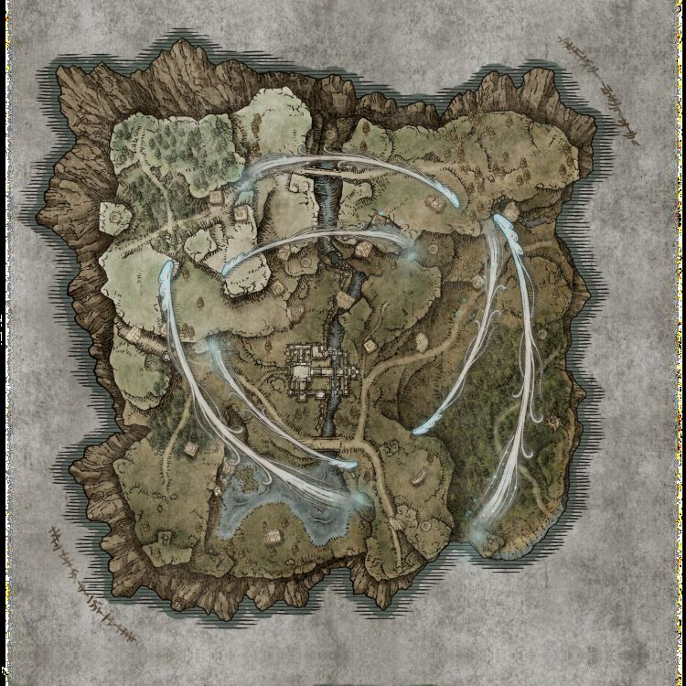

打开地图种子编辑器.bat → 启动器里选一份 regulation.bin → 点【读取】刷新数据.bat 重新生成数据遗迹（毒）·营地（发狂）·教堂（圣）
regulation.bin 复制一份留着（改坏了直接换回来）Tools ▸ Data Transfer ▸ Import ▸ Import from fileLotResultSmallBaseAndSpot_*.csv → 表 LotResultSmallBaseAndSpot（据点排布）LotResultPlayAreaParam_*.csv → 表 LotResultPlayAreaParam（缩圈 / 夜boss 指向）LotResultMapPatternFlag_*.csv → 表 LotResultMapPatternFlag（事件 / 第几天 / 出生点）Ctrl+S 保存地图排布锁定器.bat）